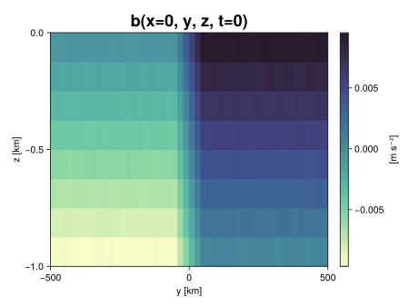
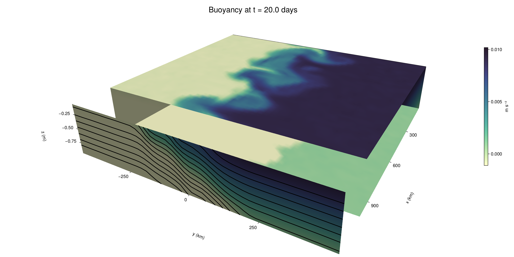

Baroclinic adjustment
In this example, we simulate the evolution and equilibration of a baroclinically unstable front.
Install dependencies
First let's make sure we have all required packages installed.
using Pkg
pkg"add Oceananigans, CairoMakie"using Oceananigans
using Oceananigans.UnitsGrid
We use a three-dimensional channel that is periodic in the x direction:
Lx = 1000kilometers # east-west extent [m]
Ly = 1000kilometers # north-south extent [m]
Lz = 1kilometers # depth [m]
grid = RectilinearGrid(size = (48, 48, 8),
x = (0, Lx),
y = (-Ly/2, Ly/2),
z = (-Lz, 0),
topology = (Periodic, Bounded, Bounded))48×48×8 RectilinearGrid{Float64, Periodic, Bounded, Bounded} on CPU with 3×3×3 halo
├── Periodic x ∈ [0.0, 1.0e6) regularly spaced with Δx=20833.3
├── Bounded y ∈ [-500000.0, 500000.0] regularly spaced with Δy=20833.3
└── Bounded z ∈ [-1000.0, 0.0] regularly spaced with Δz=125.0Model
We built a HydrostaticFreeSurfaceModel with an ImplicitFreeSurface solver. Regarding Coriolis, we use a beta-plane centered at 45° South.
model = HydrostaticFreeSurfaceModel(; grid,
coriolis = BetaPlane(latitude = -45),
buoyancy = BuoyancyTracer(),
tracers = :b,
momentum_advection = WENO(),
tracer_advection = WENO())HydrostaticFreeSurfaceModel{CPU, RectilinearGrid}(time = 0 seconds, iteration = 0)
├── grid: 48×48×8 RectilinearGrid{Float64, Periodic, Bounded, Bounded} on CPU with 3×3×3 halo
├── timestepper: QuasiAdamsBashforth2TimeStepper
├── tracers: b
├── closure: Nothing
├── buoyancy: BuoyancyTracer with ĝ = NegativeZDirection()
├── free surface: ImplicitFreeSurface with gravitational acceleration 9.80665 m s⁻²
│ └── solver: FFTImplicitFreeSurfaceSolver
└── coriolis: BetaPlane{Float64}We start our simulation from rest with a baroclinically unstable buoyancy distribution. We use ramp(y, Δy), defined below, to specify a front with width Δy and horizontal buoyancy gradient M². We impose the front on top of a vertical buoyancy gradient N² and a bit of noise.
"""
ramp(y, Δy)
Linear ramp from 0 to 1 between -Δy/2 and +Δy/2.
For example:
```
y < -Δy/2 => ramp = 0
-Δy/2 < y < -Δy/2 => ramp = y / Δy
y > Δy/2 => ramp = 1
```
"""
ramp(y, Δy) = min(max(0, y/Δy + 1/2), 1)
N² = 1e-5 # [s⁻²] buoyancy frequency / stratification
M² = 1e-7 # [s⁻²] horizontal buoyancy gradient
Δy = 100kilometers # width of the region of the front
Δb = Δy * M² # buoyancy jump associated with the front
ϵb = 1e-2 * Δb # noise amplitude
bᵢ(x, y, z) = N² * z + Δb * ramp(y, Δy) + ϵb * randn()
set!(model, b=bᵢ)Let's visualize the initial buoyancy distribution.
using CairoMakie
# Build coordinates with units of kilometers
x, y, z = 1e-3 .* nodes(grid, (Center(), Center(), Center()))
b = model.tracers.b
fig, ax, hm = heatmap(y, z, interior(b)[1, :, :],
colormap=:deep,
axis = (xlabel = "y [km]",
ylabel = "z [km]",
title = "b(x=0, y, z, t=0)",
titlesize = 24))
Colorbar(fig[1, 2], hm, label = "[m s⁻²]")
fig
Simulation
Now let's build a Simulation.
simulation = Simulation(model, Δt=20minutes, stop_time=20days)Simulation of HydrostaticFreeSurfaceModel{CPU, RectilinearGrid}(time = 0 seconds, iteration = 0)
├── Next time step: 20 minutes
├── Elapsed wall time: 0 seconds
├── Wall time per iteration: NaN days
├── Stop time: 20 days
├── Stop iteration : Inf
├── Wall time limit: Inf
├── Callbacks: OrderedDict with 4 entries:
│ ├── stop_time_exceeded => Callback of stop_time_exceeded on IterationInterval(1)
│ ├── stop_iteration_exceeded => Callback of stop_iteration_exceeded on IterationInterval(1)
│ ├── wall_time_limit_exceeded => Callback of wall_time_limit_exceeded on IterationInterval(1)
│ └── nan_checker => Callback of NaNChecker for u on IterationInterval(100)
├── Output writers: OrderedDict with no entries
└── Diagnostics: OrderedDict with no entriesWe add a TimeStepWizard callback to adapt the simulation's time-step,
conjure_time_step_wizard!(simulation, IterationInterval(20), cfl=0.2, max_Δt=20minutes)Also, we add a callback to print a message about how the simulation is going,
using Printf
wall_clock = Ref(time_ns())
function print_progress(sim)
u, v, w = model.velocities
progress = 100 * (time(sim) / sim.stop_time)
elapsed = (time_ns() - wall_clock[]) / 1e9
@printf("[%05.2f%%] i: %d, t: %s, wall time: %s, max(u): (%6.3e, %6.3e, %6.3e) m/s, next Δt: %s\n",
progress, iteration(sim), prettytime(sim), prettytime(elapsed),
maximum(abs, u), maximum(abs, v), maximum(abs, w), prettytime(sim.Δt))
wall_clock[] = time_ns()
return nothing
end
add_callback!(simulation, print_progress, IterationInterval(100))Diagnostics/Output
Here, we save the buoyancy, $b$, at the edges of our domain as well as the zonal ($x$) average of buoyancy.
u, v, w = model.velocities
ζ = ∂x(v) - ∂y(u)
B = Average(b, dims=1)
U = Average(u, dims=1)
V = Average(v, dims=1)
filename = "baroclinic_adjustment"
save_fields_interval = 0.5day
slicers = (east = (grid.Nx, :, :),
north = (:, grid.Ny, :),
bottom = (:, :, 1),
top = (:, :, grid.Nz))
for side in keys(slicers)
indices = slicers[side]
simulation.output_writers[side] = JLD2OutputWriter(model, (; b, ζ);
filename = filename * "_$(side)_slice",
schedule = TimeInterval(save_fields_interval),
overwrite_existing = true,
indices)
end
simulation.output_writers[:zonal] = JLD2OutputWriter(model, (; b=B, u=U, v=V);
filename = filename * "_zonal_average",
schedule = TimeInterval(save_fields_interval),
overwrite_existing = true)JLD2OutputWriter scheduled on TimeInterval(12 hours):
├── filepath: ./baroclinic_adjustment_zonal_average.jld2
├── 3 outputs: (b, u, v)
├── array type: Array{Float64}
├── including: [:grid, :coriolis, :buoyancy, :closure]
└── max filesize: Inf YiBNow we're ready to run.
@info "Running the simulation..."
run!(simulation)
@info "Simulation completed in " * prettytime(simulation.run_wall_time)[ Info: Running the simulation...
[ Info: Initializing simulation...
[00.00%] i: 0, t: 0 seconds, wall time: 32.147 seconds, max(u): (0.000e+00, 0.000e+00, 0.000e+00) m/s, next Δt: 20 minutes
[ Info: ... simulation initialization complete (23.027 seconds)
[ Info: Executing initial time step...
[ Info: ... initial time step complete (20.761 seconds).
[06.94%] i: 100, t: 1.389 days, wall time: 57.939 seconds, max(u): (1.232e-01, 1.199e-01, 1.628e-03) m/s, next Δt: 20 minutes
[13.89%] i: 200, t: 2.778 days, wall time: 18.446 seconds, max(u): (2.115e-01, 1.712e-01, 1.859e-03) m/s, next Δt: 20 minutes
[20.83%] i: 300, t: 4.167 days, wall time: 18.525 seconds, max(u): (2.743e-01, 2.453e-01, 1.697e-03) m/s, next Δt: 20 minutes
[27.78%] i: 400, t: 5.556 days, wall time: 18.739 seconds, max(u): (3.442e-01, 3.083e-01, 1.731e-03) m/s, next Δt: 20 minutes
[34.72%] i: 500, t: 6.944 days, wall time: 18.661 seconds, max(u): (4.084e-01, 4.077e-01, 1.823e-03) m/s, next Δt: 20 minutes
[41.67%] i: 600, t: 8.333 days, wall time: 18.699 seconds, max(u): (5.348e-01, 5.895e-01, 2.595e-03) m/s, next Δt: 20 minutes
[48.61%] i: 700, t: 9.722 days, wall time: 18.751 seconds, max(u): (6.616e-01, 9.369e-01, 2.896e-03) m/s, next Δt: 20 minutes
[55.56%] i: 800, t: 11.111 days, wall time: 18.799 seconds, max(u): (9.791e-01, 1.200e+00, 4.030e-03) m/s, next Δt: 20 minutes
[62.50%] i: 900, t: 12.500 days, wall time: 18.810 seconds, max(u): (1.272e+00, 1.301e+00, 4.285e-03) m/s, next Δt: 20 minutes
[69.44%] i: 1000, t: 13.889 days, wall time: 18.884 seconds, max(u): (1.409e+00, 1.323e+00, 4.538e-03) m/s, next Δt: 20 minutes
[76.39%] i: 1100, t: 15.278 days, wall time: 18.793 seconds, max(u): (1.372e+00, 1.213e+00, 4.279e-03) m/s, next Δt: 20 minutes
[83.33%] i: 1200, t: 16.667 days, wall time: 18.862 seconds, max(u): (1.449e+00, 1.078e+00, 4.430e-03) m/s, next Δt: 20 minutes
[90.28%] i: 1300, t: 18.056 days, wall time: 18.701 seconds, max(u): (1.231e+00, 1.167e+00, 3.101e-03) m/s, next Δt: 20 minutes
[97.22%] i: 1400, t: 19.444 days, wall time: 18.526 seconds, max(u): (1.414e+00, 1.152e+00, 2.398e-03) m/s, next Δt: 20 minutes
[ Info: Simulation is stopping after running for 5.301 minutes.
[ Info: Simulation time 20 days equals or exceeds stop time 20 days.
[ Info: Simulation completed in 5.307 minutes
Visualization
All that's left is to make a pretty movie. Actually, we make two visualizations here. First, we illustrate how to make a 3D visualization with Makie's Axis3 and Makie.surface. Then we make a movie in 2D. We use CairoMakie in this example, but note that using GLMakie is more convenient on a system with OpenGL, as figures will be displayed on the screen.
using CairoMakieThree-dimensional visualization
We load the saved buoyancy output on the top, bottom, north, and east surface as FieldTimeSerieses.
filename = "baroclinic_adjustment"
sides = keys(slicers)
slice_filenames = NamedTuple(side => filename * "_$(side)_slice.jld2" for side in sides)
b_timeserieses = (east = FieldTimeSeries(slice_filenames.east, "b"),
north = FieldTimeSeries(slice_filenames.north, "b"),
bottom = FieldTimeSeries(slice_filenames.bottom, "b"),
top = FieldTimeSeries(slice_filenames.top, "b"))
B_timeseries = FieldTimeSeries(filename * "_zonal_average.jld2", "b")
times = B_timeseries.times
grid = B_timeseries.grid48×48×8 RectilinearGrid{Float64, Periodic, Bounded, Bounded} on CPU with 3×3×3 halo
├── Periodic x ∈ [0.0, 1.0e6) regularly spaced with Δx=20833.3
├── Bounded y ∈ [-500000.0, 500000.0] regularly spaced with Δy=20833.3
└── Bounded z ∈ [-1000.0, 0.0] regularly spaced with Δz=125.0We build the coordinates. We rescale horizontal coordinates to kilometers.
xb, yb, zb = nodes(b_timeserieses.east)
xb = xb ./ 1e3 # convert m -> km
yb = yb ./ 1e3 # convert m -> km
Nx, Ny, Nz = size(grid)
x_xz = repeat(x, 1, Nz)
y_xz_north = y[end] * ones(Nx, Nz)
z_xz = repeat(reshape(z, 1, Nz), Nx, 1)
x_yz_east = x[end] * ones(Ny, Nz)
y_yz = repeat(y, 1, Nz)
z_yz = repeat(reshape(z, 1, Nz), grid.Ny, 1)
x_xy = x
y_xy = y
z_xy_top = z[end] * ones(grid.Nx, grid.Ny)
z_xy_bottom = z[1] * ones(grid.Nx, grid.Ny)Then we create a 3D axis. We use zonal_slice_displacement to control where the plot of the instantaneous zonal average flow is located.
fig = Figure(size = (1600, 800))
zonal_slice_displacement = 1.2
ax = Axis3(fig[2, 1],
aspect=(1, 1, 1/5),
xlabel = "x (km)",
ylabel = "y (km)",
zlabel = "z (m)",
xlabeloffset = 100,
ylabeloffset = 100,
zlabeloffset = 100,
limits = ((x[1], zonal_slice_displacement * x[end]), (y[1], y[end]), (z[1], z[end])),
elevation = 0.45,
azimuth = 6.8,
xspinesvisible = false,
zgridvisible = false,
protrusions = 40,
perspectiveness = 0.7)Axis3()We use data from the final savepoint for the 3D plot. Note that this plot can easily be animated by using Makie's Observable. To dive into Observables, check out Makie.jl's Documentation.
n = length(times)41Now let's make a 3D plot of the buoyancy and in front of it we'll use the zonally-averaged output to plot the instantaneous zonal-average of the buoyancy.
b_slices = (east = interior(b_timeserieses.east[n], 1, :, :),
north = interior(b_timeserieses.north[n], :, 1, :),
bottom = interior(b_timeserieses.bottom[n], :, :, 1),
top = interior(b_timeserieses.top[n], :, :, 1))
# Zonally-averaged buoyancy
B = interior(B_timeseries[n], 1, :, :)
clims = 1.1 .* extrema(b_timeserieses.top[n][:])
kwargs = (colorrange=clims, colormap=:deep)
surface!(ax, x_yz_east, y_yz, z_yz; color = b_slices.east, kwargs...)
surface!(ax, x_xz, y_xz_north, z_xz; color = b_slices.north, kwargs...)
surface!(ax, x_xy, y_xy, z_xy_bottom ; color = b_slices.bottom, kwargs...)
surface!(ax, x_xy, y_xy, z_xy_top; color = b_slices.top, kwargs...)
sf = surface!(ax, zonal_slice_displacement .* x_yz_east, y_yz, z_yz; color = B, kwargs...)
contour!(ax, y, z, B; transformation = (:yz, zonal_slice_displacement * x[end]),
levels = 15, linewidth = 2, color = :black)
Colorbar(fig[2, 2], sf, label = "m s⁻²", height = Relative(0.4), tellheight=false)
title = "Buoyancy at t = " * string(round(times[n] / day, digits=1)) * " days"
fig[1, 1:2] = Label(fig, title; fontsize = 24, tellwidth = false, padding = (0, 0, -120, 0))
rowgap!(fig.layout, 1, Relative(-0.2))
colgap!(fig.layout, 1, Relative(-0.1))
save("baroclinic_adjustment_3d.png", fig)
Two-dimensional movie
We make a 2D movie that shows buoyancy $b$ and vertical vorticity $ζ$ at the surface, as well as the zonally-averaged zonal and meridional velocities $U$ and $V$ in the $(y, z)$ plane. First we load the FieldTimeSeries and extract the additional coordinates we'll need for plotting
ζ_timeseries = FieldTimeSeries(slice_filenames.top, "ζ")
U_timeseries = FieldTimeSeries(filename * "_zonal_average.jld2", "u")
B_timeseries = FieldTimeSeries(filename * "_zonal_average.jld2", "b")
V_timeseries = FieldTimeSeries(filename * "_zonal_average.jld2", "v")
xζ, yζ, zζ = nodes(ζ_timeseries)
yv = ynodes(V_timeseries)
xζ = xζ ./ 1e3 # convert m -> km
yζ = yζ ./ 1e3 # convert m -> km
yv = yv ./ 1e3 # convert m -> km49-element Vector{Float64}:
-500.0
-479.1666666666667
-458.3333333333333
-437.5
-416.6666666666667
-395.8333333333333
-375.0
-354.1666666666667
-333.3333333333333
-312.5
-291.6666666666667
-270.8333333333333
-250.0
-229.16666666666666
-208.33333333333334
-187.5
-166.66666666666666
-145.83333333333334
-125.0
-104.16666666666667
-83.33333333333333
-62.5
-41.666666666666664
-20.833333333333332
0.0
20.833333333333332
41.666666666666664
62.5
83.33333333333333
104.16666666666667
125.0
145.83333333333334
166.66666666666666
187.5
208.33333333333334
229.16666666666666
250.0
270.8333333333333
291.6666666666667
312.5
333.3333333333333
354.1666666666667
375.0
395.8333333333333
416.6666666666667
437.5
458.3333333333333
479.1666666666667
500.0Next, we set up a plot with 4 panels. The top panels are large and square, while the bottom panels get a reduced aspect ratio through rowsize!.
set_theme!(Theme(fontsize=24))
fig = Figure(size=(1800, 1000))
axb = Axis(fig[1, 2], xlabel="x (km)", ylabel="y (km)", aspect=1)
axζ = Axis(fig[1, 3], xlabel="x (km)", ylabel="y (km)", aspect=1, yaxisposition=:right)
axu = Axis(fig[2, 2], xlabel="y (km)", ylabel="z (m)")
axv = Axis(fig[2, 3], xlabel="y (km)", ylabel="z (m)", yaxisposition=:right)
rowsize!(fig.layout, 2, Relative(0.3))To prepare a plot for animation, we index the timeseries with an Observable,
n = Observable(1)
b_top = @lift interior(b_timeserieses.top[$n], :, :, 1)
ζ_top = @lift interior(ζ_timeseries[$n], :, :, 1)
U = @lift interior(U_timeseries[$n], 1, :, :)
V = @lift interior(V_timeseries[$n], 1, :, :)
B = @lift interior(B_timeseries[$n], 1, :, :)Observable([-0.009389848915315755 -0.008124136195239504 -0.006893604561389586 -0.005596185683334121 -0.00436765957251103 -0.0031133918710766436 -0.0018874457359230842 -0.0006183626074496476; -0.009393679717909201 -0.008098987818257585 -0.006897010631780884 -0.005642333501612968 -0.004394878466353204 -0.003123376877213042 -0.001869434016029809 -0.0006302460883680605; -0.009352088514460802 -0.008122842166304458 -0.006870750697457059 -0.00562283659262999 -0.004388178289263804 -0.0031120961173604043 -0.0018483121478116444 -0.0006488934882188855; -0.00938769979544717 -0.00811017844542689 -0.006877598845988944 -0.005621244655907565 -0.004381532153379123 -0.0031518042488875783 -0.0018600045628234289 -0.0006356386854273899; -0.009383293292915264 -0.008132511846770031 -0.006866099180745264 -0.005609924903480863 -0.004385765653892317 -0.0031528378545896945 -0.0019078767525516928 -0.0006223018483475644; -0.009357890551292401 -0.0081258454206932 -0.006882141964440552 -0.005631612520876867 -0.004362325971759461 -0.0031666778714777894 -0.001859931798389582 -0.000612262190269415; -0.009391183245582769 -0.008112633223048912 -0.006892497049028966 -0.005607633139187661 -0.004380889783033845 -0.0031529891753397346 -0.0018700204063348436 -0.0006382281941149116; -0.009374535080736093 -0.008133313724882218 -0.006866547809949368 -0.005624146904077923 -0.004370062926337781 -0.0031258624065614777 -0.0018827740930537733 -0.000617255131260921; -0.009348655491698535 -0.008110181378408349 -0.006873927509748932 -0.005668435294604947 -0.004363624944226828 -0.003142694568009118 -0.0018599035290514162 -0.000620532978451669; -0.00940089376853001 -0.008138458969666489 -0.006890078852937552 -0.005634008117614078 -0.004345349881096232 -0.003112576961345327 -0.0018695303891265505 -0.0006555847800091536; -0.009377763655185613 -0.008145434318887501 -0.006865213502073805 -0.005632959046971185 -0.004357608033653021 -0.003110649141975933 -0.0018847226778093689 -0.0006328468195220718; -0.009391798033198392 -0.008124370374756046 -0.00688555801753691 -0.005602902615990336 -0.004373628266667523 -0.0031137228935273404 -0.0018858975169043113 -0.0006179867528008576; -0.009369843400995028 -0.008135092466670265 -0.006867097277068781 -0.00561104286755471 -0.004384268953308064 -0.003131548408031155 -0.001867233635892726 -0.0006184667752693229; -0.009387278747464391 -0.008119481378579893 -0.006900632832917318 -0.005613410659065908 -0.004385551919771074 -0.003139337457525897 -0.0018652515284783282 -0.0006104183148895612; -0.009369503523596593 -0.008140402809396085 -0.006893500918310063 -0.005628741978771674 -0.004377143856113069 -0.0031093212356818195 -0.0018826014302728714 -0.0006289745935101741; -0.009379157327119416 -0.00813190947431833 -0.0068531963985100025 -0.005643551137537304 -0.004359907177300783 -0.003109364810904687 -0.0018686225041837801 -0.0006361325660993235; -0.009351185611691645 -0.008101815673415546 -0.006882379733694158 -0.005625844477873898 -0.004387566675275041 -0.003125501776051563 -0.0018801475778939016 -0.0006305187614626878; -0.009387175878984027 -0.008125265634550417 -0.0069019387123194186 -0.005635878357826405 -0.004343145578406666 -0.003133187085523343 -0.001854176156353092 -0.0006132384642847682; -0.009384531013542053 -0.008103483460618113 -0.006890955965324756 -0.0056372697151282 -0.004353245012960988 -0.003121372385551123 -0.0018741719889654115 -0.0006202814025051776; -0.009387753150032008 -0.008146287992806143 -0.006876493843076735 -0.005599130468645041 -0.004383951269077043 -0.0031141438868941156 -0.0018769585796095738 -0.0005923472871817777; -0.009394868560924032 -0.008116422295416375 -0.006894888576059867 -0.005616020791687188 -0.0044001454138197895 -0.003137107123546139 -0.0018855024435030382 -0.0006231909833283429; -0.009365793185152812 -0.008151803603213128 -0.0068283680633571325 -0.005611247925006353 -0.004389360954653748 -0.00316339071245565 -0.0018677020668578731 -0.0006066338051930268; -0.00749231436249125 -0.006226586819385211 -0.00500469071741016 -0.0037114699530918557 -0.0024954299366567877 -0.001259134326720131 3.714811972625657e-6 0.0012435306964373404; -0.005401656479695698 -0.004149758855640629 -0.0029284634882179943 -0.0016671368807012132 -0.00041552762530783677 0.0008420260051332099 0.0020856820932730782 0.00330902843579604; -0.003327890593367742 -0.0020883084913817574 -0.0008325897361269203 0.0003930574451054796 0.0016587701023486126 0.0029131653698258072 0.004158555221484822 0.005430241245086929; -0.0012557217554796528 -1.7879454119728695e-5 0.0012556642549147875 0.0025150629480061096 0.0037495799043906434 0.00498403800863475 0.00623082831054634 0.007501934368445778; 0.0006115730431570343 0.001865661913415163 0.0031309602422984538 0.004355294995080914 0.0056507410038755335 0.006853548985033757 0.008127139910154494 0.009363943180867237; 0.0006103069168359044 0.001875343463691512 0.0031397906192955852 0.00438365109327312 0.005617415885038055 0.006884681800189041 0.008127268340297764 0.009368186705831932; 0.000620129004848606 0.001900302400556827 0.003153735054203466 0.004371546707553136 0.005598807014733313 0.0068657684982859684 0.008129345787845372 0.009389069047915853; 0.0006367273646162065 0.0018675715256472557 0.0031182933670473797 0.004366633099970339 0.005643754656342014 0.00687207297452561 0.008148496085126994 0.009366149094302221; 0.0006485457796982501 0.0018835808054970503 0.0031215448399561176 0.004381306833154059 0.005596769416138229 0.006873987471165987 0.00813396996494086 0.009379054691997525; 0.0006471856472203231 0.0018633755989730472 0.0031386135135806786 0.004374488804790106 0.005631016064213214 0.006862567353730525 0.008132448663274287 0.009374498341885501; 0.000608307361376749 0.0018757044491913997 0.00315033033947131 0.004383909088907077 0.005635305749798363 0.0068460744249876 0.008113485053060506 0.009368021650184378; 0.0006414922951979002 0.0018823316649794733 0.003113906139415913 0.004359621563871574 0.0056229485160490455 0.00685694317622153 0.008115178084259858 0.009386755364052219; 0.0006309693094590148 0.0018583046454874238 0.0031387496751836695 0.0043760437119924455 0.005592629226915346 0.006874948040909487 0.008122571581529727 0.009352449027781965; 0.0006156477252168259 0.001888891475864002 0.003110418479940584 0.004353084050837653 0.005622808541399657 0.006877379616170405 0.00812087886434295 0.009382781693203411; 0.0006199031323276333 0.0018638709914567664 0.003114864635215656 0.004381173102611896 0.005625070137182916 0.006867134301509364 0.008143923754884307 0.009353582605706415; 0.0006353018421678086 0.001836025223219123 0.0031272558298380544 0.004385659582321911 0.005623893186872601 0.006873339705414341 0.008143531829999957 0.009379951590961852; 0.0006241210096012714 0.0018496097826689827 0.003128333698400177 0.004383392119718977 0.005656761643540364 0.006888088408528195 0.008123449023496234 0.009393501022092384; 0.0006091083911795877 0.0018977703528004935 0.0031260846907335323 0.004365701709852928 0.005594156084666479 0.006862094754608501 0.008104780127953322 0.009371058373269578; 0.0006259646761381099 0.0018634497982322204 0.003144694788909488 0.0043771671333929585 0.00563536853007766 0.006893045284688012 0.008120924047092576 0.009370029760093677; 0.0006246467475242434 0.001881512773110064 0.003113348025484025 0.004369295069554138 0.005636251914532609 0.006862179181222407 0.008165813560524168 0.00939702389665715; 0.0006097055800077267 0.0018722314174492792 0.0031051239736865897 0.004378097664152662 0.0056330178780620655 0.00687724529786708 0.008122078994338665 0.009359012292629672; 0.0006321529211876415 0.0018770367806189355 0.00313586900829438 0.004362392875456296 0.005626093512820334 0.0068665453094325654 0.008105686447537317 0.009337715100260924; 0.0006209281065448192 0.0018617205840506595 0.0031311048767079697 0.004379283444155008 0.005609658774893249 0.006885309400214278 0.008114447233742262 0.00938015656129672; 0.0006271718813981556 0.0018391029021148921 0.0031502782677014112 0.00434812350610551 0.005623838451275387 0.00687352387778431 0.008116475226692796 0.009384500951424029; 0.000619685774113447 0.0018827312435606824 0.003149530692516294 0.004365930087139644 0.005617058918729908 0.006858529218036236 0.008122855236666433 0.009372891923140277; 0.0006377386948710028 0.0018952348562018384 0.003144361145815216 0.004384388705581334 0.00562706508226871 0.006879365051104501 0.008140911456115356 0.00933811274355181])
and then build our plot:
hm = heatmap!(axb, xb, yb, b_top, colorrange=(0, Δb), colormap=:thermal)
Colorbar(fig[1, 1], hm, flipaxis=false, label="Surface b(x, y) (m s⁻²)")
hm = heatmap!(axζ, xζ, yζ, ζ_top, colorrange=(-5e-5, 5e-5), colormap=:balance)
Colorbar(fig[1, 4], hm, label="Surface ζ(x, y) (s⁻¹)")
hm = heatmap!(axu, yb, zb, U; colorrange=(-5e-1, 5e-1), colormap=:balance)
Colorbar(fig[2, 1], hm, flipaxis=false, label="Zonally-averaged U(y, z) (m s⁻¹)")
contour!(axu, yb, zb, B; levels=15, color=:black)
hm = heatmap!(axv, yv, zb, V; colorrange=(-1e-1, 1e-1), colormap=:balance)
Colorbar(fig[2, 4], hm, label="Zonally-averaged V(y, z) (m s⁻¹)")
contour!(axv, yb, zb, B; levels=15, color=:black)Finally, we're ready to record the movie.
frames = 1:length(times)
record(fig, filename * ".mp4", frames, framerate=8) do i
n[] = i
endThis page was generated using Literate.jl.